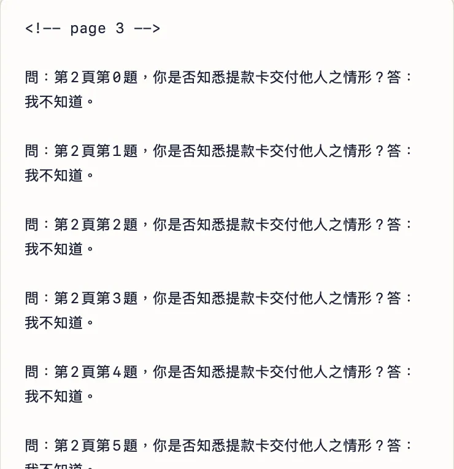
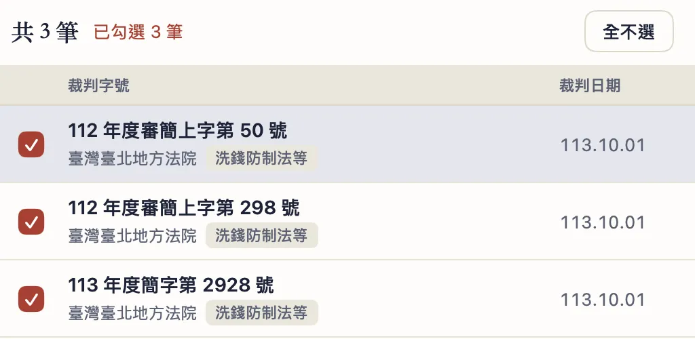
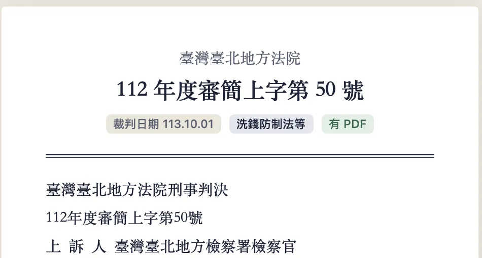
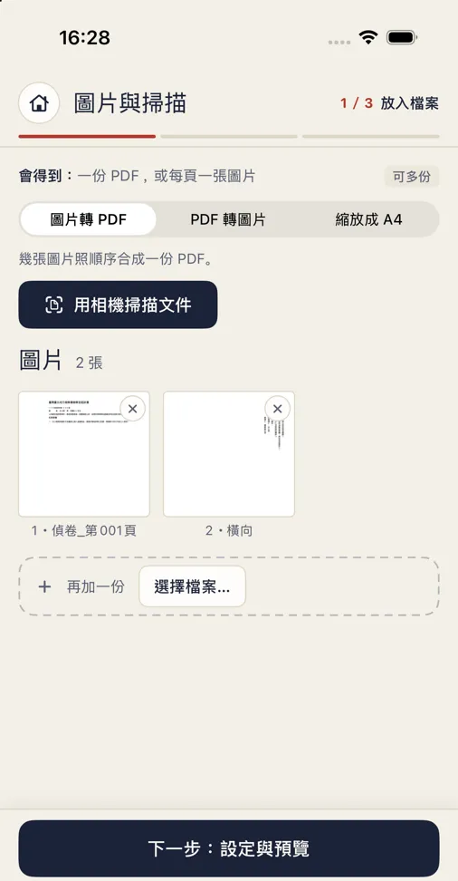

給律師與法務助理的 Mac／iPhone／iPad App
閱卷拿到的 PDF，整理成能用的樣子。
放入卷證，App 先分出起訴書、筆錄、陳述人，列給你核對，確認了再輸出。加書籤、依陳述人切開、全文搜尋，到遞狀前的證物冊與去識別化，都在同一個 App。
- 卷證不上傳
- 不用註冊帳號
- Mac、iPhone 與 iPad
十三個工具，分成四組
點工具名稱，看它的操作說明。每個工具在輸出之前，都會先列出會產生哪些檔案。
讀卷
閱卷回來，先把卷整理成找得到東西的樣子
遞狀與交付
要送出去之前
幾個常用的工具
原頁面

轉出來的 Markdown

遞狀與交付｜去識別化
交給別人或 AI 之前，先把個資換成代號
找出姓名、身分證字號、電話、地址等個資，逐項確認後，輸出換成「姓名A」「身分證A」的文字檔。對照表另外存，之後可以把含代號的文字換回原文。用規則找個資，一定會有漏，輸出前請逐項確認。

Mac 版｜交給 AI
整理好的檔案，交給你用的 AI 工具
選範圍（整個輸出資料夾或某一次輸出）和想請 AI 做什麼（時間軸、供述比對、詰問問題、判決比較、爭點與證據對照），按「複製指示」，貼到你用的 AI 工具。App 另外在輸出資料夾寫一份《給 AI 的說明.md》：每個檔案是什麼、頁碼怎麼看、引用要標出處。App 本身不呼叫任何 AI，也不上傳；範圍裡有原始個資時會提醒你先去識別化。

勾選

點到的那一筆

每個工具
按下去之前，先列出會產生的檔案
輸出步驟的右邊，列出這次會產生的每個檔名，以及裡面有幾份文件、幾頁。改設定，清單跟著變。原本的 PDF 不會被改動。

iPhone・iPad
iPhone・iPad 有同樣的十三個工具
首頁最上面是「用相機掃描文件」。紙本掃成 PDF 後，App 會問要不要接著用其他工具處理，例如可搜尋 PDF、書籤形成。在 iPhone 上，主要按鈕在畫面下方。

這些時候用得到
- 閱卷回來的偵卷有八百頁，要找某個證人的每一次筆錄
- 準備交互詰問，把被告歷次的警詢、偵訊筆錄排在一起對照
- 開庭時要很快翻到起訴書或某一份筆錄
- 掃描的舊卷沒有文字，先做成可以搜尋的 PDF
- 遞狀前，把幾份證物排好、蓋上「原證 1」、合成一冊附目錄
- 想請 AI 工具整理爭點，先把姓名、身分證字號換成代號
- 寫書狀前，找同一個法院近期同類案件的判決
會連網的時候
- 卷證只在這台裝置上讀取和處理。
- 判決下載會連到司法院的裁判書查詢網站，送出你填的搜尋條件，並下載你勾選的判決。
- iPhone・iPad 免費版會連到 Google AdMob 載入廣告。卷證和判決的內容不會用在廣告上。
- Mac 版不收集任何資料（你自己送出的回報問題除外）。「交給 AI」只把一段指示放進剪貼簿、在輸出資料夾寫一份說明檔，App 不呼叫任何 AI，也不會把檔案傳出去。
- 回報問題：只有你在 App 裡按「送出」時，才會把你寫的問題描述、你選填的聯絡方式，以及 App 版本、系統版本、機型、介面語言送到我們的 Google 試算表，用來找問題、回覆你。不會送出照片、錄音、位置、廣告識別碼或你在 App 裡的資料。
基本資料
| 對應裝置 | Mac（macOS 14 以上）、iPhone（iOS 17 以上）、iPad（iPadOS 17 以上） |
|---|---|
| 處理的檔案 | PDF（含掃描檔）、圖片 |
| 輸出格式 | PDF、Markdown、純文字、圖片（JPG／PNG） |
| 文字辨識 | 使用裝置內建的功能，不用另外安裝 |
| 判決來源 | 司法院裁判書查詢網站（要連網） |
| 上架地區 | 台灣的 App Store |
目前的限制
- 掃描品質差的頁面、很小的字和密集的表格，文字辨識會出錯，直書也認不完整。分出來的清單請核對後再輸出。
- 輸出的 PDF 不會保留原檔的表單欄位和內嵌附件。
- 判決來自司法院網站。網站改版或連不上時，搜尋會失敗。
價格
Mac
US$14.99一次買斷
- 沒有廣告
- 多了「交給 AI」：複製一段指示，把輸出的檔案交給你用的 AI 工具整理
iPhone・iPad
免費下載
- 畫面下方有橫幅廣告
- 按「開始輸出」時，偶爾有一段讀秒廣告
- 一次付費 US$2.99，就不再顯示廣告
Mac 版和 iPhone・iPad 版是兩個分開的 App，在一邊購買不包含另一邊。